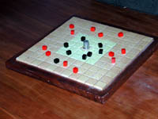
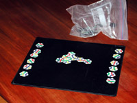
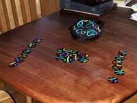
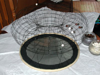
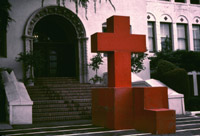
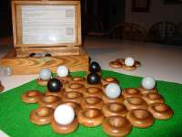
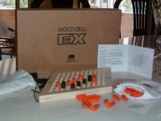
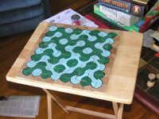

|
Pinko Pallino is the original, larger version of the game sold as
Quoridor in the U.S. Pinko Pallino is hand crafted in Italy and
is unavailable in the US. This board was crafted by Greg Schmidt
using some nice wood and salvaged bits of aluminum, using tools most of
us don't have access to. What's a "scroll saw?". |
 Commercial Board
|
| Chase |
||
|  Handmade Breakthru
|
Breakthru Breakthru
is an interesting
strategy game which was part of the 3M bookshelf series. I
discovered the game while I was in high school, probably when it was
originally issued. The commercially produced set is elegant, with
cast metal brass and steel pieces. It was also much too expensive
for me at the time - about $50 if I remember correctly. So I made
my set own using wood, ceramic tiles, armies salvaged from a Risk
game, and a sewing thimble.
|
 3M Breakthru
|
|  Magnetic Tantrix
|
Tantrix
is a boardless, tile based game which is packaged in a bag. It's
very portable, but impossible to play on a surface smaller than a
table. It's especially not suitable for playing on planes.
I made my own magnetic set, starting with a photo of the set of tiles,
manipulated with photoshop, printed as an 8x10 glossy by an on line
photo service. The photo was glued to a piece of refrigerator
magnet material and cut up into tiles. The board is the
cover of a 3-ring binder with a piece of steel stuffed inside to make
it
magnetic. |
 standard Tantrix
|
|  toroidal Go board
|
Go
is one of the oldest board games, which has been played in pretty
nearly its current form for 4000 years. Despite the long history, it's
still possible to think of a new twist. At the left is a
"standard" 19x19 Go board constructed by Ken Clements, in the shape of
a torus. Each intersection of the wire frame is welded, and
each bead (stone) is cross cut so it can be stuck to an intersection of
the board. This is the obvious solution for those who don't
have the patience to study corner Joseki. |
 standard Go board.
|
|  Handmade Soma Cube "Altar"
|
The
Soma cube is an elegant solid puzzle, consisting of 7 irregular pieces
which can be assembled into a cube or an infinite variety of other
interesting shapes. The standard commercial product is small and
made of plastic. For some, that is just not a large enough
canvas. The handmade version at the left is made of welded steel
plates. The "small" cubes are approximately 60cm on each
side. The giant soma cube set was created by theater professor
Thurston James at Immaculate
Heart College, ca 1972. The installation seen here was not
anticipated or condoned by the administration of the college. |
 standard Soma Cube "Altar" |
|  handcrafted Zèrz
|
Zèrtz |
 standard Zèrtz set
|
 handmade Hive
|
Hive At a distant point in the
difficulty spectrum from Zèrz, Hive requires a lot of
effort. BGG matthew.marquand spent many hours wood burning and
hand painting a duplicate set.
|
 standard Hive
|
 handmade Hex
|
Hex Commercially produced versions of
Hex are rarely seen, but hexagonal tiles of various materials are not
too hard to find. Go stones are the most common markers.
|
 commercially produced Hex
|
 handmade Trippples
|
Trippples is an interesting game because of its elegant layout scheme
(all possible directions for 3 arrows) and the twist in the rules: that
the directions you can move are under your opponents piece. The
standard edition is uninspiring moulded plastic. Wooden editions
do exist, but this custom wooden creation by Derek H. Hunt is miles
above anything available commercially. |
 standard Trippples
|
|  |
Truchet Truchet tiles have a simple
pattern which can be used to tile a plane, which yields a pattern of
islands and rivers. As implemented here, the tiles are
reversable, which reconfigures the board as part of play.
|
No
commercial boards exist |
| Send your contributions to
this page E-mail: |
Go to BoardSpace.net home page |
{kind=link}
{kind=link}
{kind=link}
{kind=link}
{kind=link}
{kind=link}
{kind=link}
{kind=link}
{kind=link}